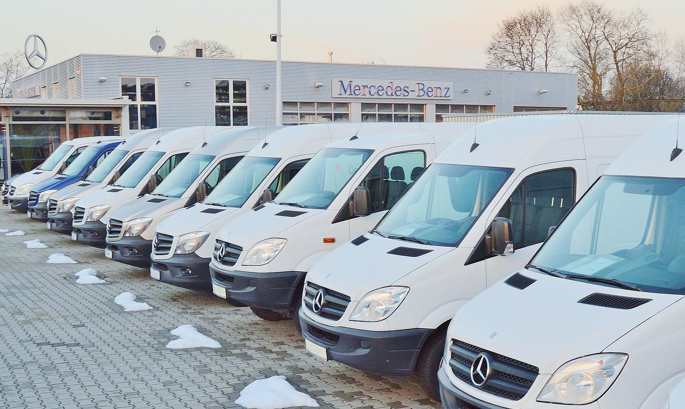

Pojazdy

2x Solaris Urbino 12
-
Klimatyzacja: Tak
-
Przeznaczenie: Trasy miejskie
-
Możliwość wynajmu: Nie
-
Obsługiwane linie: K, K5

3x Autosan Eurolider 9
-
Klimatyzacja: Nie
-
Przeznaczenie: Trasy podmiejskie
-
Możliwość wynajmu: Tak
-
Obsługiwane linie: M1, M2, M3, M4, M5, 19

10x Mercedes-Benz SprinterCity
-
Klimatyzacja: Tak
-
Przeznaczenie: Trasy miejskie i podmiejskie
-
Możliwość wynajmu: Tak
-
Obsługiwane linie: K, K5, 15, 19
Created by
Bartosz Morawiec